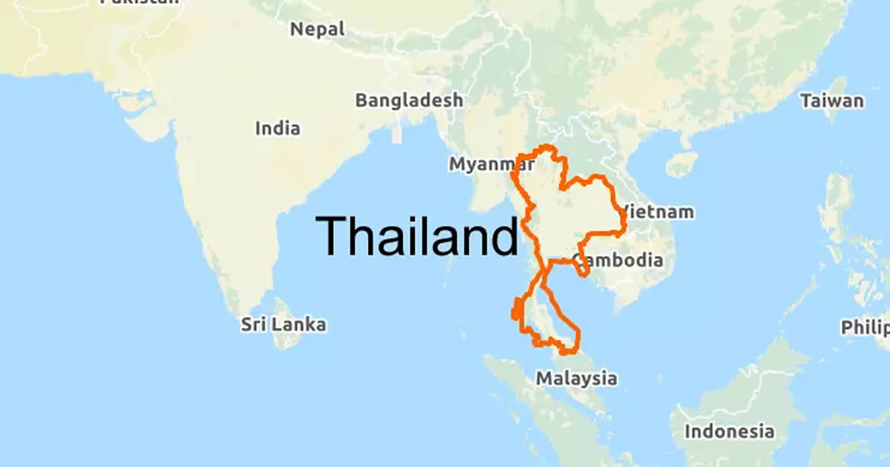

Wo liegt Thailand?
Thailand liegt in Südostasien und grenzt an Myanmar, Laos, Kambodscha und Malaysia. Es besitzt sowohl Küsten am Golf von Thailand als auch an der Andamanensee. Die Hauptstadt Bangkok liegt im Zentrum des Landes und ist ein bedeutendes kulturelles, wirtschaftliches und politisches Zentrum der Region.

Reiseinformationen
Wenn du eine Reise nach Thailand planst, solltest du folgende Punkte beachten:
- Einreise: Für kurze Aufenthalte ist oft kein Visum erforderlich (abhängig vom Herkunftsland).
- Beste Reisezeit: Die angenehmste Zeit ist zwischen November und Februar (kühlere Trockenzeit).
- Sprache: Die Amtssprache ist Thai. In touristischen Regionen wird auch Englisch verstanden.
- Währung: Die Landeswährung ist der Baht (THB).
- Gesundheit: In tropischen Gebieten ist ein Mückenschutz empfehlenswert; Impfempfehlungen beachten.
Thailand ist ein gut entwickeltes Reiseland mit freundlicher Atmosphäre, guter Infrastruktur und vielen Möglichkeiten – perfekt für Abenteuer, Kulturreisen und Badeurlaub gleichermaßen.